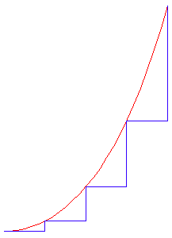
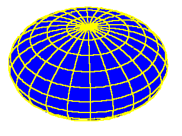
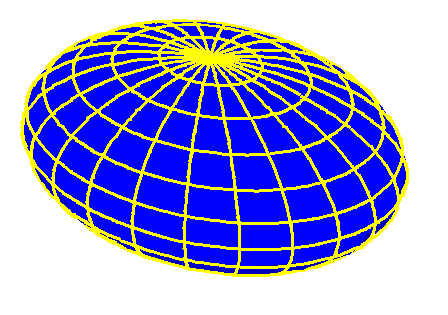
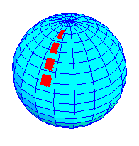
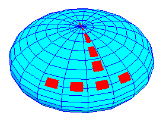
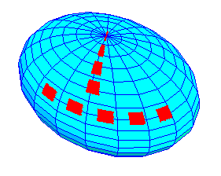
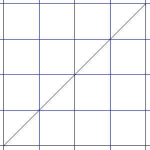
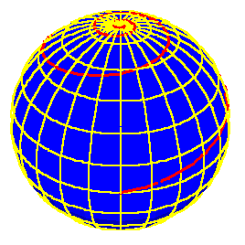
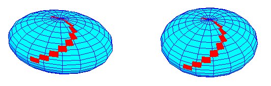

Riemann for Anti-Dummies Part 46
SOMETHING IS ROTTEN IN THE STATE OF GEOMETRY
When Gauss issued his 1799 doctoral dissertation on the fundamental theorem of algebra, he had much more in mind than just proving that particular theorem. He was creating the foundation for a mathematics that rested only on physical principles. He chose the domain of algebra, because that's where his enemy was weakest. The algebraists, Euler, Lagrange, and D'Alembert, had boasted that they had "freed" mathematics from the paradoxes of geometry and, like their modern counterparts, the information theorists, had reduced even the most complicated problems down to a finite set of rules, definitions and procedures. This was the oligarch's dream. The feudalist elite was constantly confronted with the dilemma that to stay in power they must rule over stupid people. But, the principles of physical economy would always intervene to bring about the destruction of any society that failed to value human creativity. The method of Newton, Euler, D'Alembert and Lagrange, a variation of an old Babylonian trick, offered the prospect of maintaining the world in a state of perpetual stupidity, while a small group of magicians (algebraists) kept things orderly.
Gauss showed that what Euler, Lagrange and D'Alembert considered their strength--the ability to plug holes in their system with a new definition based solely on their authority--was its weakness. Just as his teacher Kaestner had done with respect to the parallel postulate of Euclid, Gauss demonstrated that the square root of minus 1, was not the imaginary fiction Euler had defined it to be, but was the spirit of the physical universe come to haunt the algebraic system. Algebra, like the oligarchical system, could not solve its fundamental problem. It must yield to physical geometry, and the algebraists, to the creative scientist.
By the time Gauss was writing his 1799 dissertation, he had already begun the process of constructing a physical geometry based on measurement. As soon as he arrived at Goettingen in 1795, he borrowed one of the university's theodolites and spent many hours measuring out triangles on the Earth. Some of his early notebook entries show him constructing a physical geometry from these measurements without resort to the axioms, definitions and postulates of Euclidean geometry. A quarter century later, when Gauss undertook to survey the entire Kingdom of Hannover, many of his colleagues were shocked that someone of his stature would undertake a project they considered pedestrian. Yet, Gauss saw in this undertaking, the chance to further his youthful efforts to construct a physical geometry based on measurement. This work was brought to fruition in his published papers on curvature, mapping and geodesy, the which provided the foundation for Riemann's development of complex functions.
The past two segments of this series have dealt with some of the ideas developed by Gauss in his "General Investigations of Curved Surfaces" ,which established the principles of what, today, is called, "differential geometry". Before turning to the more universal applications of Gauss' geodetic investigations, it is advisable to review a principle of Leibniz' calculus through the example of the catenary.
The determination of the catenary, as the shape formed by a hanging chain, required the discovery of a physical principle that, like the square root of minus 1, was outside the rules, definitions and procedures of Euclidean geometry, and outside the domain of sense-perception. Leibniz and Bernoulli determined that, while that physical principle could not be known by some a priori rule, it could be discovered from the way it expressed itself in the smallest parts of the chain.
To illustrate this, the reader should perform the pedagogical experiment described by Bernoulli in his text on the integral calculus. Take a string and tie a light weight to the middle of it. Take one end of the string in each hand and let the weight hang freely between them. As you pull your hands apart, you will feel an increase of force exerted on your hands by the weight. If you lift one hand higher than the other, the force on the raised hand increases, while the force on the lower hand decreases.
To simulate the action that produces the catenary, now hold the string in each hand very close to the weight. Move one hand so that it pulls the weight away from the other, while allowing the string to slide through both hands. As you do this, keep the segment of the string that connects the weight with the stationary hand horizontal. (This simulates the lowest point on the catenary.) To do this, you will have to constantly raise the moving hand. The farther your hands are separated, the faster the moving hand must be raised in order for the opposite segment to remain horizontal. The curve traced out by the moving hand will be the catenary.
The reason for performing the above described experiment, is to realize that the catenary curve is physically determined. In order to keep one of the string segments horizontal, the moving hand is compelled, by a physical principle, to follow the catenary curve. The curve is not seen, but its effects are "felt" by the moving hand, at every small interval of action. That infinitesimal expression of the catenary principle, Leibniz called the "differential".
These effects can be measured by the increasing length of the curve for equal amounts of horizontal motion. In other words, when the hands first start to move apart, the moving hand only has to be raised a little to counteract the force of the weight. But as the moving hand moves further out, the amount of vertical "lift" for small horizontal increments, increases, which in turn, increases the length of the curve for corresponding horizontal motion. (See Figure 1.)
|
Figure 1  |
(Warning to those indoctrinated in Cartesian geometry: The horizontal and vertical here are not Cartesian axes, but directions of motion, physically determined with respect to the direction of the pull of gravity.)
In the hanging chain this action happens all at once. The horizontal and vertical are not simply directions of motion, they are the physically determined boundaries at which the catenary ceases to exist. The curve of the catenary unfolds as the path of least action between these two extremes. Its length per unit of action increases as it nears the vertical extreme, and decreases towards the horizontal. Since the length of the curve is a direct function of the physical principle governing the chain's action, it is an appropriate measure of that principle.
Gauss' geodetical investigations led him to extend Leibniz' calculus into a higher domain.
All measurements of the Heavens and the Earth are made with respect to a physically determined direction, as indicated by the direction of a free hanging weight on a string, called a plumb bob. The surface of the Earth is that surface that is everywhere perpendicular to the direction of the plumb bob. The question Gauss investigated in his geodesy, is, " What is the nature of this surface?" Since it were impossible to know the answer from sense perception, Gauss determined the overall nature of the surface of the Earth from small (differential) changes in action measured on it.
To begin to grasp Gauss' idea, begin with the simpler case of the celestial sphere. This sphere can be entirely determined by two angles, one around the circle of the horizon, and one from the horizon to the pole. These two angles define an orthogonal network of circles, which, for pedagogical purposes, we will call latitude and longitude. The longitudinal circles are great circles, which are what Gauss called "geodesics" or shortest lines, while the latitudinal circles are not. (See Figure 2.)
|
Figure 2  |
While these circles are always orthogonal to each other, nevertheless, their relationships change, depending on where they are on the sphere. As the longitudinal lines get closer to the poles, they get closer together. Thus, the length of an arc of a circle of latitude between two determined arcs of longitude changes, depending on its position with respect to the poles. For example, the distance along the arcs of latitude between two arcs of longitude separated by 10 degrees, will decrease, as the latitudes get closer to the poles.
Now, compare that with a spheroid. Here, the lines of longitude are elliptical, and the lines of latitude are circular. In this case, the length of the arcs of latitude between two determined arcs of longitude still get smaller as they approach the poles, but also, the length of the arcs of longitude between any two determined arcs of latitude get {longer} as they approach the poles. (See Figure 3.)
|
Figure 3 |
This characteristic can be measured in a geodetic survey, by measuring the lines of latitude as angular changes in the inclination of the north star. If the Earth were a sphere, equal angular changes will correspond to equal changes in length of the geodesic longitudinal lines. If these geodesic lines get longer, with equal angular inclinations of the north star, then the Earth is spheroidal. What the specific measurements of that spheroid are, cannot be known by a priori mathematical methods, but require more refined physical measurements, as developed by Gauss.
Now, look at an ellipsoid. Here the lengths of the lines of latitude between any two determined lines of longitude, change, both as they approach the poles, and as they move around in the "equatorial" direction as well. Additionally, the lengths of the lines of longitude between any determined lines of latitude, increase as they approach the poles. (See Figure 4.)
|
Figure 4  |
(Note: The accompanying computer generated graphics are supplied merely to illustrate the text. The reader is strongly encouraged to make physical demonstrations on real surfaces approximating these shapes. The reader is also encouraged to experiment with wildly irregular shapes as well.)
Gauss recognized this characteristic of change as a new type of "differential", which, for pedagogical purposes, I will call "surface differentials". Like Leibniz' differentials, these surface differentials express how the overall principle of action of the surface is manifest in every small part. However, instead of directly characterizing the least-action pathways, i.e. geodesics, these "surface differentials" characterize the changing nature of the principles through which the least- action pathways unfold. In other words, the surface differential expresses the characteristic of change of the principles that determine the characteristics of change of all possible least-action pathways, i.e. geodesics, on that surface.
To get an intuitive sense of this idea, think of these surface differentials being approximated by small "rectangular" patches of the surface. (See Figure 5, Figure 6, and Figure 7). Notice how the shape of these patches changes, as their positions change on the different surfaces.
Figure 5  |
Figure 6  |
Figure 7  |
Gauss determined that the relationship between these surface differentials and the characteristic geodesic lines of the surface could be measured, because even though these geodesic lines are always the shortest distance between two points on the surface, the length of the geodesic with respect to the surface differential changes, according to the overall curvature of the surface.
Gauss established the relationship between the surface differential and the characteristic curvature of the changing geodesic line, as a generalization of the Pythagorean relationship between the diagonal and the side of the square or rectangle. In the case of a flat plane, (or surface of zero-curvature, as Gauss would see it), the relationship of the diagonal to the side of a square (or rectangle), expresses the power that generates areas, as distinct from the power that generates lines. Thus, the line that forms the diagonal of the square is a different type of line than that line which forms the side of the square, because it is generated by a higher power. This relationship can be measured by the relationship of the length of the diagonal, to the lengths of the sides of the square or rectangle. The common expression for this "Pythagorean" relationship is that the length of the diagonal is equal to the square root of the sum of the squares of the sides of the square or rectangle.
This "Pythagorean" relationship, Gauss showed, was just a special case of a more general principle. On a curved surface, the sides of the square are the constantly changing "sides" of the surface differential, and the diagonal is the geodesic. The principle that governs the constantly changing lengths of the "sides" of the surface differential is a function of the curvature of the surface, which, in turn, is reflected in the changing length of the geodesic diagonal. Consequently, the overall curvature of the surface is reflected in the smallest parts of the geodesic. From this Gauss devised a more general idea of the "Pythagorean", in which the lengths of the "sides" of the surface differential are multiplied by a function that characterizes the physical curvature of the surface. As the surface differential changes according to the curvature of the surface, the length of the geodesic diagonal changes accordingly. (A future pedagogical will illustrate, geometrically, Gauss' idea.)
To get an intuitive sense of this concept, look again at figures 5, 6, and 7. Imagine the diagonals of each surface differential. Imagine how the lengths of these diagonals change with the position of the surface differential. Now conduct a similar investigation on the physical surfaces you experimented with earlier. Draw on these surfaces geodesic diagonals to the orthogonal curves you previously drew. This can be done by holding a string taught between opposite corners of each "rectangular" patch, and tracing the string path with a marker. Notice the changes in length and direction of these diagonal's geodesic as the curvature of the surface changes.
Now, look at a concrete example with respect to the physics of navigation. On a flat surface draw a grid of orthogonal lines. Draw a diagonal line that cuts all the vertical lines at the same angle. This will produce a straight line. (See Figure 8.) Now try the same thing on a sphere. That is draw a series of geodesic lines that cut the lines of longitude at a constant angle. The result is not a straight line, but a spiral like curve called a "loxodrome" (See Figure 9.) A navigator who has not mastered the principles of curvature, will find himself getting farther and farther from his destination, and closer and closer to the north pole!
 Figure 8 |
 Figure 9 |
(Figure 10 illustrates a similar process for the spheroid and ellipsoid. Notice the difference between them and the sphere.)
|
Figure 10  |
From this relationship, Gauss showed that it were possible to discover the surface differential, and thus the characteristic curvature of the surface, by measuring small variations in the length of geodesic lines. For example, in determining the length of the geodesic line that connected his observatory in Goettingen with Schumacher's in Altona, Gauss measured a 16 seconds of an arc deviation from what that length should be if the Earth were a spheroid. That led Gauss to prove that the shape of the Earth could not conform to any a priori geometric shape, but was being determined by the physical characteristics of the Earth's matter and its motion.
{kind=link}
{kind=link}
{kind=link}
{kind=link}
{kind=link}
{kind=link}
{kind=link}
{kind=link}
{kind=link}